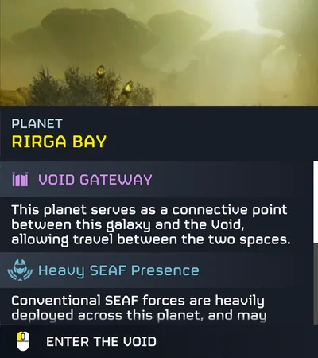
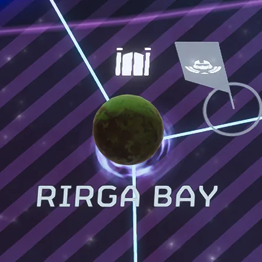

Void Gateway

the  Void Gateway 是一个
Void Gateway 是一个  光能者 galactic 位置 created and controlled by 超级地球. It is used to enter The Void.
光能者 galactic 位置 created and controlled by 超级地球. It is used to enter The Void.
背景故事
Following the creation of the Void and the engulfing of 多个 planets across the 光能者 front, engineers on Rirga Bay finally discovered that the use of modified Alcubierre Drive Warp Bubbles could be used to penetrate the Void's outer cosmic 辐射 shell. This was also tested in a lab 环境 with 多个 amphibians. Construction of the proposed Warp Relay 车站 commenced on August 9th, 2186, a 庞大 vessel capable of creating a warp bubble large enough to 运输 多个 Super Destroyers, and even the Democracy Space 车站 into the Void.
And following a 破坏 attempt by the 
 Vote Snatchers, the Warp Relay 车站 was completed on August 14th, 2186 as the 绝地潜兵 were allowed to go into the void through the first Void Gateway.
Vote Snatchers, the Warp Relay 车站 was completed on August 14th, 2186 as the 绝地潜兵 were allowed to go into the void through the first Void Gateway.
时间线
- August 9th, 2186 - The Warp Relay 车站 begins construction over Rirga Bay.
- August 14th, 2186 - The Warp Relay 车站 over Rirga Bay finishes construction, creating the first Void Gateway.
图集

描述 of a Void Gateway on the 银河地图
Rirga Bay as a Void Gateway 行星 on the 银河地图